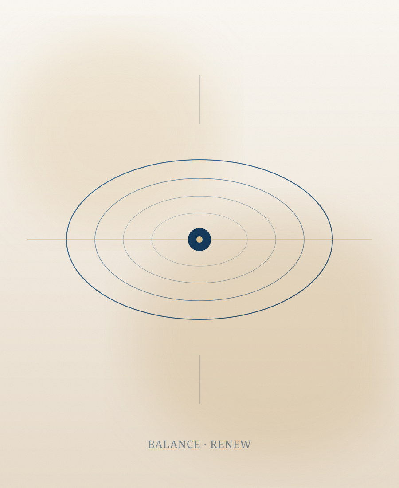

Bariatric Surgery
جراحات السمنة
جراحات وعلاجات السمنة المتكاملة، من التكميم وتحويل المسار إلى البالون وبوتوكس المعدة، مع بروتوكولات أمان ومتابعة غذائية.

جراحات وعلاجات السمنة المتكاملة، من التكميم وتحويل المسار إلى البالون وبوتوكس المعدة، مع بروتوكولات أمان ومتابعة غذائية.
